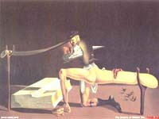

| SHIN, JIN |
I command the vassal to bring us a SHINY new bottle of GIN! |
|
This kanji is 'gigantic' plus TWO VERTICAL LINES, which we can think of as crutches. ..
My vassal is so gigantic, he needs 2 crazy vertical crutches and struts to not collapse, a la Salvador Dali.. . .no wait. . . fuck!! You do better.

No wait, that is a pretty ok mnemonic. Check that vassal out! Look at 'im go!!! shit, after all that explanation, it's only a ＊ |
| 大臣 |
Minister
★☆☆☆☆
cabinet Minister (Minister of Finance, Minister of Defense, Minister of Butts and Asses, etc.) |
|
minister
大臣 閣僚 |
 KANJIDAMAGE
KANJIDAMAGE